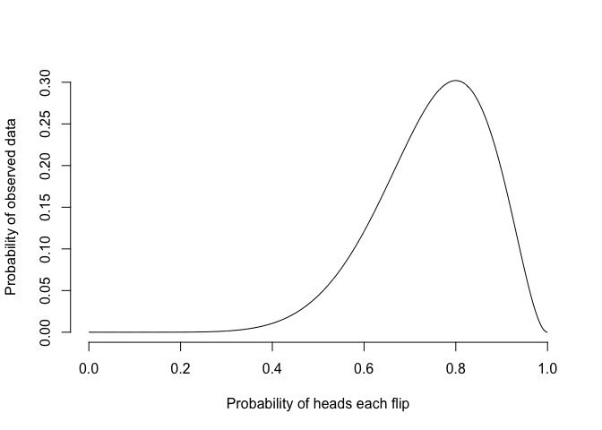
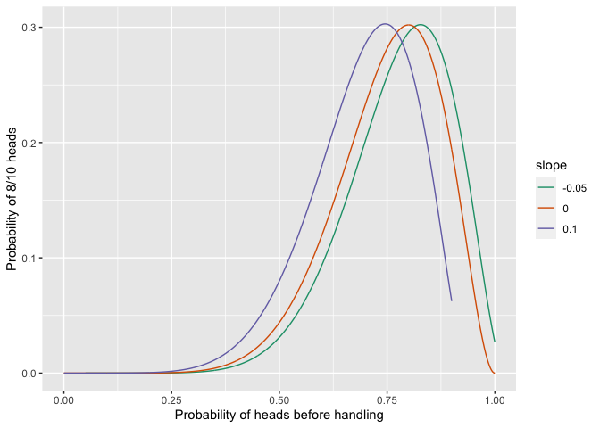

The goal of flipped is to explore models for coin flippings beyond the standard binomial.
You can install the development version of this package from GitHub with:
# install.packages("devtools")
devtools::install_github("bomeara/flipped")Imagine we get 8 heads out of 10 coin flips. In standard stats, we’d do something like this:
library(flipped)
nflips <- 10
nheads <- 8
probability_heads <- seq(from=0, to=1, length.out=1000)
probability_data <- dbinom(nheads, nflips, probability_heads)The probability of the data given different probabilities of heads under the standard binomial model is:
plot(probability_heads, probability_data, xlab="Probability of heads each flip", ylab="Probability of observed data", type="l", bty="n")
The best estimate from this is 0.8, and the likelihood of the data given this is 0.3. However, this model makes a strong assumption – the probability of heads is constant across flips. But coins are real objects, which can be bent, get dirty, lose metal, and more in the keyboard-roughened hands of a statistician. It’s not unreasonable to think that the act of handling and flipping a coin changes the probability of heads. We can make models that can do this.
One set of models could have a linear slope: every time a coin is handled, its probability of heads can increase or decrease by a set amount: 0.50, 0.51, 0.52. The parameters of such a model would be the starting probability of heads before a coin was handled and the slope of the change. The standard binomial model then becomes a special case of this model with slope arbitrarily set to zero. We could think of ways to restrict this to other models: a 0.010 increase per flip from a starting value, a 0.005 loss from a starting value, and so forth. The probability of heads for such models, where the probability of heads before handling is 0.50, would be:
We can calculate the likelihoood of the observed data of 8 heads from 10 flips for all these models, changing the probability of heads for a coin before it is handled:
flat <- profile_linear_model(nheads, nflips, slope=0.0)
increasing <- profile_linear_model(nheads, nflips, slope=0.10)
decreasing <- profile_linear_model(nheads, nflips, slope=-0.05)
all_results <- rbind(flat, increasing, decreasing)
all_results$slope <- as.factor(c(rep(0, nrow(flat)), rep(0.10, nrow(increasing)), rep(-0.05, nrow(decreasing))))
print(ggplot(all_results, aes(x=preflip_prob, y=likelihood, colour=slope, group=slope)) + geom_line() + ylab("Probability of 8/10 heads") + xlab("Probability of heads before handling") + scale_colour_brewer(palette = "Dark2") )
#> Warning: Removed 150 row(s) containing missing values (geom_path).
They have different optimal parameter values, but the same likelihood:
print(round(flat[which.max(flat$likelihood),],2))
#> preflip_prob likelihood
#> 800 0.8 0.3
print(round(increasing[which.max(increasing$likelihood),],2))
#> preflip_prob likelihood
#> 746 0.75 0.3
print(round(decreasing[which.max(decreasing$likelihood),],2))
#> preflip_prob likelihood
#> 828 0.83 0.3